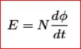
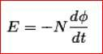

In 1831, Michael Faraday, an English physicist gave one of the most basic laws of electromagnetism called Faraday's law of electromagnetic induction. This law explains the working principle of most of theelectrical motors, generators, electrical transformers and inductors . This law shows the relationship between electric circuit and magnetic field. Faraday performs an experiment with a magnet and coil. During this experiment, he found how emf is induced in the coil when flux linked with it changes. He has also done experiments in electro-chemistry and electrolysis.
Faraday's Experiment
RELATIONSHIP BETWEEN INDUCED EMF AND FLUX

Faraday's law
In this experiment, Faraday takes a magnet and a coil and connects a galvanometer across the coil. At starting, the magnet is at rest, so there is no deflection in the galvanometer i.e needle of galvanometer is at the center or zero position. When the magnet is moved towards the coil, the needle of galvanometer deflects in one direction. When the magnet is held stationary at that position, the needle of galvanometer returns back to zero position. Now when the magnet is moved away from the coil, there is some deflection in the needle but in opposite direction and again when the magnet becomes stationary, at that point with respect to coil, the needle of the galvanometer returns back to the zero position. Similarly, if magnet is held stationary and the coil is moved away and towards the magnet, the galvanometer shows deflection in similar manner. It is also seen that, the faster the change in the magnetic field, the greater will be the induced emf or voltage in the coil.
| Position of magnet | Deflection in galvanometer |
|---|---|
| Magnet at rest | No deflection in galvanometer |
| Magnet moves towards the coil | Deflection in galvanometer in one direction |
| Magnet is held stationary at same position (near the coil) | No deflection in galvanometer |
| Magnet moves away from the coil | Deflection in galvanometer but in opposite direction |
| Magnet is held stationary at same position (away from the coil) | No deflection in galvanometer |
< class="Green">CONCLUSION: From this experiment, Faraday concluded that whenever there is relative motion between conductor and a magnetic field, the flux linkage with a coil changes and this change in flux induces a voltage across a coil.
Michael Faraday formulated two laws on the basis of above experiments. These laws are called Faraday's laws of electromagnetic induction.
Faraday's Laws
Faraday's First Law
Any change in the magnetic field of a coil of wire will cause an emf to be induced in the coil. This emf induced is called induced emf and if the conductor circuit is closed, the electric current will also circulate through the circuit and this electric current is called induced current.
Method to change magnetic field:
1. By moving a magnet towards or away from the coil
2. By moving the coil into or out of the magnetic field.
3. By changing the area of a coil placed in the magnetic field
4. By rotating the coil relative to the magnet.
Faraday's Second Law
It states that the magnitude of emf induced in the coil is equal to the rate of change of flux that linkages with the coil. The flux linkage of the coil is the product of number of turns in the coil and flux associated with the coil.
Faraday Law Formula
Faraday's law
Consider a magnet approaching towards a coil. Here we consider two instants at time T1 and time T2.
Flux linkage with the coil at time, T1 = NΦ1 Wb
Flux linkage with the coil at time, T2 = NΦ2 wb
Change in flux linkage = N(Φ2 - Φ1)
Let this change in flux linkage be, Φ = Φ2 - Φ1
So, the Change in flux linkage = NΦ
Now the rate of change of flux linkage = NΦ / t
Take derivative on right hand side we will get
The rate of change of flux linkage = NdΦ/dt
But according to Faraday's law of electromagnetic induction, the rate of change of flux linkage is equal to induced emf.

Considering Lenz's Law.

Where flux Φ in Wb = B.A
B = magnetic field strength
A = area of the coil
HOW TO INCREASE EMF INDUCED IN A COIL
• By increasing the number of turns in the coil i.e N- From the formulae derived above it is easily seen that if number of turns of coil is increased, the induced emf also gets increased.
• By increasing magnetic field strength i.e B surrounding the coil- Mathematically if magnetic field increases, flux increases and if flux increases emf induced will also get increased. Theoretically, if the coil is passed through a stronger magnetic field, there will be more lines of force for coil to cut and hence there will be more emf induced.
• By increasing the speed of the relative motion between the coil and the magnet - If the relative speed between the coil and magnet is increased from its previous value, the coil will cut the lines of flux at a faster rate, so more induced emf would be produced.
Applications of Faraday Law
Faraday law is one of the most basic and important laws of electromagnetism . This law finds its application in most of the electrical machines, industries and medical field etc.
• Electrical Transformers
It is a static ac device which is used to either step up or step down voltage or current. It is used in generating station, transmission and distribution system. The transformer works on Faraday's law.
• Electrical Generators
The basic working principle of electrical generator is Faraday's law of mutual induction. Electric generator is used to convert mechanical energy into electrical energy.
• Induction Cookers
The Induction cooker, is a most fastest way of cooking. It also works on principle of mutual induction. When electric current flows through the coil of copper wire placed below a cooking container, it produces a changing magnetic field. This alternating or changing magnetic field induces an emf and hence the electric current in the conductive container, and we know that flow of electric current always produces heat in it.
• Electromagnetic Flow Meters
It is used to measure velocity of blood and certain fluids. When a magnetic field is applied to electrically insulated pipe in which conducting fluids are flowing, then according to Faraday's law, an electromotive force is induced in it. This induced emf is proportional to velocity of fluid flowing .
• Form the bases of Electromagnetic Theory
Faraday's idea of lines of force is used in well known Maxwell's equations. According to Faraday's law, change in magnetic field gives rise to change in electric field and the converse of this is used in Maxwell's equations.
• Musical Instruments
It is also used in musical instruments like electric guitar, electric violin etc.
 by
by {kind=link}
{kind=link}